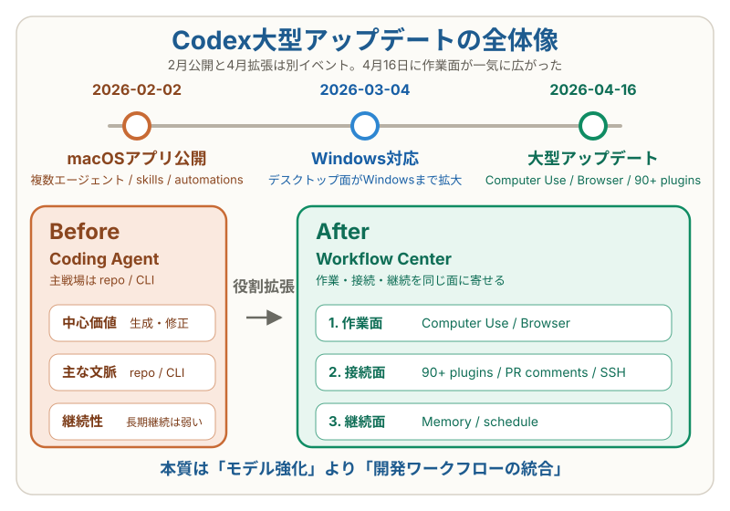

OpenAI Codexデスクトップアプリ大型アップデート解説【2026年4月】¶
Computer Use・アプリ内ブラウザ・90超プラグインで何が変わったか¶
対象 / ポイント
対象: CodexやClaude CodeなどのAIコーディングエージェントを追っている開発者、テックリード、業務導入を検討しているチーム。
ポイント: - 2026年4月16日の大型更新と、2月2日のアプリ公開を分けて理解できる - 何が増え、何がまだ限定提供なのかを一次情報ベースで把握できる - Codexが「コードを書く道具」から「作業を進める司令塔」へ広がる意味が分かる
2026年4月16日、OpenAIは Codex for (almost) everything を公開した。 重要なのは、これはCodexアプリの公開日ではないことだ。 アプリは2月2日にmacOS向けとして公開され、3月4日にWindows対応が追加された。 4月16日は、その役割を大きく広げた大型アップデートとして読むのが正確だ。12
問いはシンプルだ。今回の更新で、Codexは何ができるようになり、開発フローのどこが変わるのか。
まず日付を整理する¶
二次情報で混ざりやすいのは、 2月2日のアプリ公開と4月16日の大型拡張だ。 その間に、3月4日のWindows対応が挟まる。まずこの3点だけを切り分けておくと、 どこからが今回の更新で、どこまでが段階的なロールアウトなのかを誤読しにくい。12

今回の更新は3方向に広がった¶
1. 作業面が広がった¶
最も大きい変化は、Codexがコード以外の作業面に出てきたことだ。 OpenAIは今回、background computer use を前面に出し、 CodexがMac上のアプリを見て、クリックし、入力できるようになったと説明している。 しかも複数エージェントを並列で動かしつつ、 ユーザー自身の作業を邪魔しない設計だ。1
ここにアプリ内ブラウザと画像生成が重なる。 ブラウザではページ上に直接コメントを書いて指示でき、 画像は gpt-image-1.5 で生成・編集できる。 UI調整、モックアップ、ゲーム素材作成までを 一つの流れで回しやすくなった。14
この層で効くのは、次のような仕事だ。
- ローカルで動くUIの確認と修正
- APIのないデスクトップアプリを含む検証作業
- スクリーンショットを起点にしたデザイン調整
- コードとビジュアルの往復が多いフロントエンド開発
2. 接続面が深くなった¶
今回の更新は、能力向上というより周辺ツールとの接続強化でもある。 OpenAIは「90超の追加プラグイン」を発表し、 Atlassian Rovo、CircleCI、CodeRabbit、GitLab Issues、 Microsoft Suite、Renderなどを挙げている。1
重要なのは、プラグインが単なるAPI連携ではなく、 skills・app integrations・MCP servers を束ねる配布単位だということだ。 つまりCodexは、チームで再利用するワークフローの配布面を持ち始めた。3
アプリ自体の開発者向け機能も厚くなった。 GitHub review comments 対応、複数ターミナルタブ、リッチプレビュー、 summary pane、SSH経由のremote devbox接続が加わり、 Codexは「コードを書く場所」から 「確認・修正・レビューを切り替える場所」へ寄っている。1
3. 継続面が長くなった¶
もう一つの変化は、Codexがその場限りのセッションではなくなり始めたことだ。 OpenAIはautomationsを拡張し、既存スレッドの再利用、 future work scheduling、長期タスクの自動再開に対応した。 数日から数週間単位の仕事を、文脈ごと持ち越す方向だ。1
memory previewも加わる。 Codexは好みや修正履歴、集めるのに時間がかかった情報を覚えられるようになり、 projects・plugins・memoryを材料に次にやるべき仕事も提案する。 これは単なる履歴保持ではない。 次の作業を先回りして組み立てる層が入った。1
OpenAI自身も、issue triage、CI失敗の要約、 daily release briefs、bug checks などにautomationsを使っている。 Codexの価値が高まるのは、単発のコード生成より、 こうした繰り返し作業を吸収したときだ。12
何が本質的に変わったのか¶
今回の大型更新の本質は、 Codexが「より賢いコーディングモデル」になったことだけではない。 指示面、実行面、確認面、継続面が一つのアプリに寄り始めた ことが重要だ。
| 以前のCodex像 | 4月16日以降のCodex像 |
|---|---|
| コード生成・修正が中心 | デスクトップ操作、ブラウザ作業、画像生成まで含む |
| 1タスク単位の委譲 | 長期タスクの再開、スケジュール実行、継続提案 |
| GitHubやCLIが主戦場 | アプリ内でレビュー、確認、接続、要約まで回す |
| 個人設定への依存が大きい | プラグインでチームの再利用可能ワークフローを配布できる |
この変化は、競争軸もずらす。今後の比較は「どのモデルが強いか」だけでは足りない。どこまで広い作業面を持ち、その面を何日単位で維持できるかが、エージェント製品の差になる。
Claude Coworkとの比較で見えること¶
ここで気になるのは、時系列ではなく何が同じで、どこで機能差が出るのかだろう。一次情報ベースで見ると、両者はかなり近い方向に進んでいる。そのうえで、差が出るのは主に「開発ワークフロー寄りか」「知的業務全般と企業管理寄りか」だ。1256
| 機能/局面 | Claude Cowork | OpenAI Codex app | 実際の読み方 |
|---|---|---|---|
| デスクトップ操作 | あり。computer use で画面を見て操作できる5 | あり。background computer use を追加1 | ここはかなり近い。同じカテゴリの機能と見てよい |
| 長期タスクの持ち越し | scheduled tasks、persistent thread5 | future work scheduling、thread reuse、長期タスク再開1 | ここも大枠では同じ。継続実行系は両方そろってきた |
| 外部ツール接続 | plugins、connectors56 | 90超の追加プラグイン、MCP servers、app integrations1 | どちらも接続面は強い。単純に「片方だけ強い」とは言いにくい |
| 開発レビュー作業 | Claude Code由来の agentic work を desktop に持ち込む6 | GitHub review comments、複数terminal tabs、remote devboxes over SSH1 | Codexが強く見える局面。レビュー、検証、修正の往復が濃い開発チーム向き |
| フロントエンド反復 | computer use でブラウザやアプリ操作5 | in-app browser でページに直接コメント、画像生成も統合1 | Codexが差別化しやすい局面。UI確認と修正指示の往復を1つの面で回しやすい |
| 一般的な knowledge work | knowledge work beyond coding を前面に出す6 | 今回かなり広がったが、説明の中心はまだ開発作業12 | Coworkが強く見える局面。非開発タスク込みで読むならCoworkの説明の方が自然 |
| 管理/可観測性 | admin controls、usage analytics、OpenTelemetry、role-based access controls56 | sandboxing、team rules、権限昇格ルール2 | Coworkが強く見える局面。企業導入時の管理論点はAnthropic側の打ち出しが厚い |
この比較を雑に一言でまとめるなら、こうなる。
- 同じ部分: desktop操作、長期タスク、外部ツール接続は、方向性としてかなり重なっている
- Codexが差を作りやすい部分: in-app browser、PR comment対応、terminal/SSH など、開発フローを1つに寄せる局面
- Coworkが差を作りやすい部分: knowledge work 全般への広がり、管理機能、可観測性
なので読者向けには、次のように読むのがわかりやすい。
- 「開発の往復作業を1アプリに寄せたい」ならCodex
- 「コード以外も含めたdesktop agentや企業管理を見たい」ならCowork
- 「computer use や長期タスクの有無」で選ぶ段階では、もう大きな差はない
導入前に押さえるべき注意点¶
今回のアップデートは大きいが、全機能が同時に同条件で使えるわけではない。公式情報ベースで押さえるべき点は次の4つだ。13
- Computer Use はまずmacOSで提供され、EU/UK向け展開は後続
- Memory と context-aware suggestions は Enterprise、Edu、EU/UK 向けに順次展開
- remote devbox over SSH は alpha 表記で、安定提供ではない
- プラグイン数は公式では「more than 90 additional plugins」であり、111個とまでは言い切られていない
この手のアップデート記事で雑に書くと、 使える人と使えない人の差を見落とす。 特に企業導入では、提供地域、管理権限、アプリ制御、 データポリシーまで切り分けて書く必要がある。3
関連記事¶
- Codex CLI クイックスタート：5分でインストールから最初のタスクまで
- Codex Web多機能並列開発ワークフロー — 個人開発でもPRを量産する全体像
- Codex CLI vs Claude Code【2026年4月版】
- OpenAI / ChatGPT ガイドハブ
まとめ¶
2026年4月16日のCodex大型更新は、単なる機能追加ではない。OpenAIはCodexを「コードを書くエージェント」から「ソフトウェア開発全体の作業面を束ねる司令塔」へ押し出し始めた。
この流れで先に効いてくるのは、ベンチマーク比較より運用設計だ。 プラグインをどう配るか、memoryに何を持たせるか、 automationsをどこまで任せるか。 Codexの価値は、モデル単体より チームの仕事の流れをどこまで吸収できるか で決まり始めている。